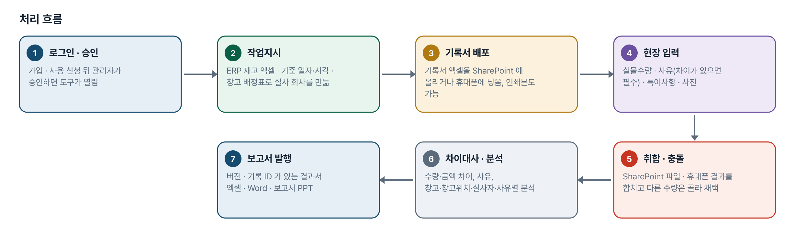
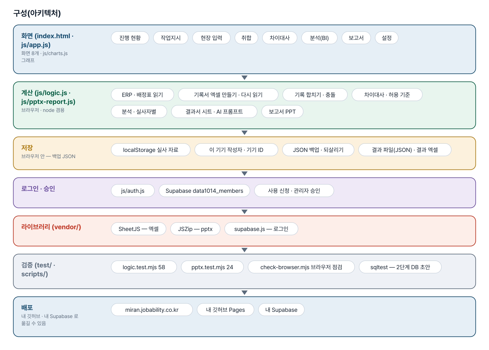
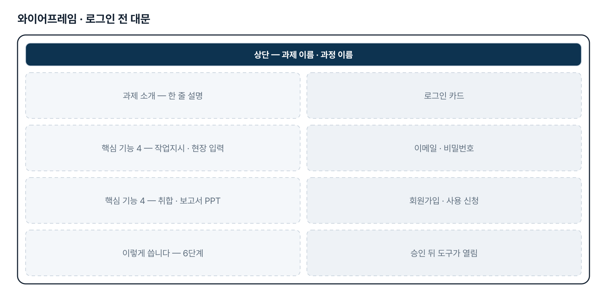
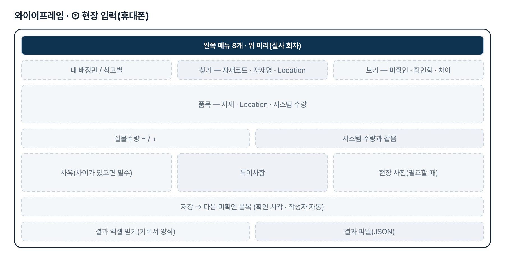
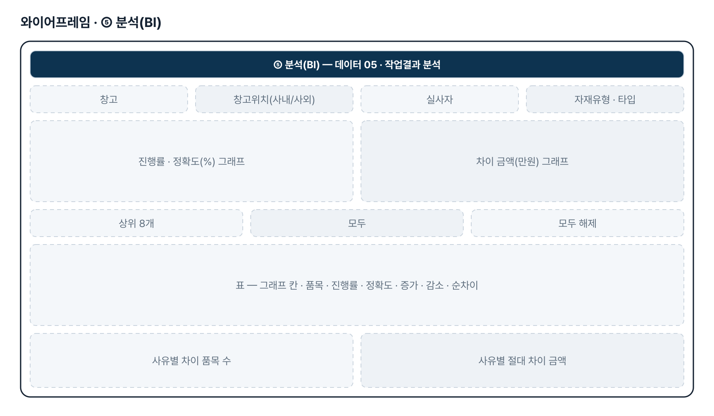
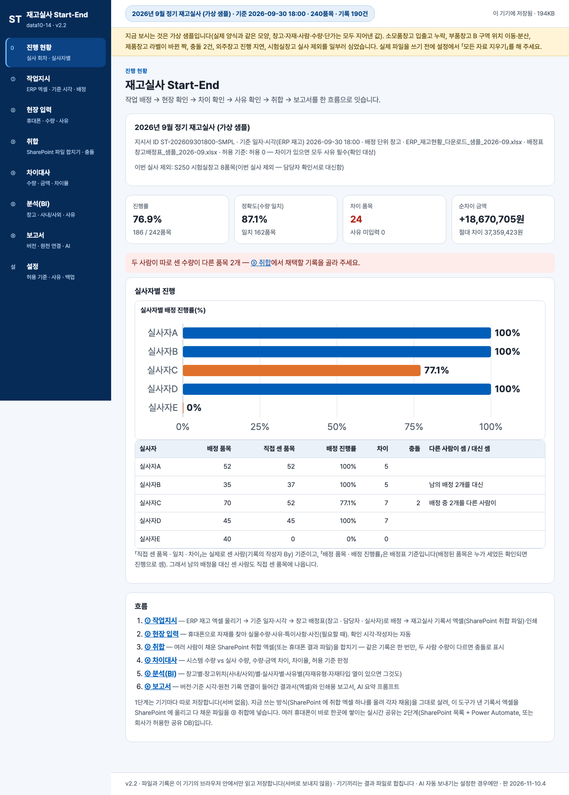

기획서 내려받기
파이프라인 · 아키텍처 · 와이어프레임 · 개발일지가 들어간 워드 문서입니다. 버전마다 따로 남깁니다.
요구사항과 구현
| 기획서 요구 | 구현 |
|---|---|
| ERP 다운로드 엑셀(데이터 01)을 올려 작업지시 출발 | ERP 엑셀 올리기(머리행 자동 인식 · 열 연결 · 추가 열 보존), ERP 한 줄 = 작업지시 한 줄, 기준 일자·시각 필수 |
| 작업배정 시스템화 | 창고 배정표 올리기(실사인원 0 창고 제외 · 실사자 수만큼 나눔 · 담당자 기록) 또는 이름 목록 자동 배정 |
| 휴대폰으로 현장 재고실사 기록 | ② 현장 입력 — 휴대폰 폭 화면, 찾기 + 보기, 수량 +/−, 「시스템 수량과 같음」, 저장하면 다음 미확인 품목 |
| 차이 확인 · 사유 확인(사유 카테고리) | 차이가 있으면 사유 필수(기본 6개, 설정에서 고침), 허용 기준 기본 0 — ④ 차이대사에서 수량·금액·차이율 |
| 수량 근거 사진 · 특이사항 · 작성자 · 확인 시각 | 현장 사진(필요할 때만, 800px), 특이사항, 확인 시각·작성자 자동, ④ 에서 「사진 보기」 |
| 취합이 실시간으로 진행 | SharePoint 취합 엑셀 · 휴대폰 결과 파일을 ③ 취합에서 합치기(같은 기록은 한 번만, 충돌 고르기). 실시간 공유는 2단계 |
| 창고별·자재유형별·자재타입별 BI | ⑤ 분석 — 창고별 · 창고위치(사내/사외)별 · 실사자별 · 사유별 · 시간대별(자재유형·자재타입 열이 있으면 그것도), 고른 행만 그래프 |
| 최종 보고서(데이터 06) · 버전 · 원천 기록 연결 | ⑥ 보고서 — 발행 버전 v1·v2…, 기록 ID, 결과서 엑셀 · 인쇄/PDF · Word · 직전 보고서 pptx 에 내용만 바꾼 PPT |
그림으로 보기






개발일지
2026-11-10 · v2.2 — 보고서 PPT 빈 장 · 대표색
- ⑥ 보고서 PPT — 요청자 직전 보고서로 재현: 차이 슬라이드 도형마다 붙은 태그 파트(ppt/tags)를 본뜬 장 모두가 함께 가리켜, PowerPoint 가 두 번째 장부터 비움 → 장마다 태그 파트를 새로 복사, 지운 차이 슬라이드의 태그는 정리
- 상세 표 7장 모두 행 수가 기대와 같음(빈 장 0) · 꾸러미 검사(깨진 관계 · 함께 쓰는 파트 · 콘텐츠 형식) 0건 · LibreOffice PDF 로 장마다 확인
- 도구 화면 색 — css/theme-brand.css 덮어쓰기 층(주색 #005EB8, 왼쪽 메뉴 #062B57, 바탕 #f4f7fb), 그래프 주 계열도 대표색
- 로직 58 · pptx 25 · 브라우저 점검 모두 통과
2026-11-10 · 최종 기획서 · 로그인
- 로그인 · 사용 신청 · 관리자 승인 키트 적용(표 data1014_members)
- 로그인 전 대문 — 과제 소개 · 핵심 기능 4 · 이렇게 씁니다
- 최종 기획서 v2.0 — 파이프라인 · 아키텍처 · 와이어프레임
- 내 깃허브 · 내 Supabase 로 옮기는 안내서
- 로직 58 · pptx 24 통과
2026-11-08 · 5차 반영
- ⑤ 분석 — 표에서 고른 행만 그래프(처음엔 절대 차이 상위 8개), 창고 이름만
- ③ 취합 실사자별 — 배정은 배정표, 직접 센 품목은 기록의 작성자(By)
- ④ 차이대사 — 작은 그림 + 「사진 보기」 · 「사진 받기」
- ⑥ 보고서 PPT — 직전 보고서로 여러 장을 만들 때 줄 · 슬라이드 · 개체 번호를 새로 매김
- 빈 화면에 「받은 기록서 엑셀 넣기(현장)」 · 여러 사람 입력 순서 5단계
- 로직 58 · pptx 24 · 브라우저 72 통과
2026-10-28 · 4차 반영
- ERP 같은 자재 · 다른 저장위치 줄이 한 줄로 합쳐지던 결함 — 합치지 않고 「#2」로
- 엑셀 숫자 칸 천 단위 쉼표(#,##0), 날짜 yyyy-mm-dd
- 현장 입력 찾기와 보기를 함께
- 로직 54 · pptx 23 통과
2026-10-27 · 3차 반영
- 직전 보고서 pptx 를 올리면 1장 개요 · 실사 현황, 2장 창고별 차이 표, 3장 이슈 초안만 바꿈(JSZip)
- 차이수량 = 실물 − 시스템(모자라면 −)
- 오후 — 실사완료 = 실물 × ERP 단가, 실사 현황 기본 행 = 자재타입
- pptx 23 · 로직 51 통과, 일부러 깨뜨려 확인 12가지
2026-10-21 · 1단계 · 2차 반영
- 패들릿 제출 글 · 데이터 인벤토리로 기획서 정리, 1단계 6개 화면
- 2차 — ERP 견본 열, 창고 배정표(실사인원 0 제외 · 나눔), 허용 0, SharePoint 취합 파일, 사유 목록 설정
- 2단계 DB 초안 supabase/schema.sql(앱 미연결) · 로컬 SQL 검사
- 로직 35 → 50 통과